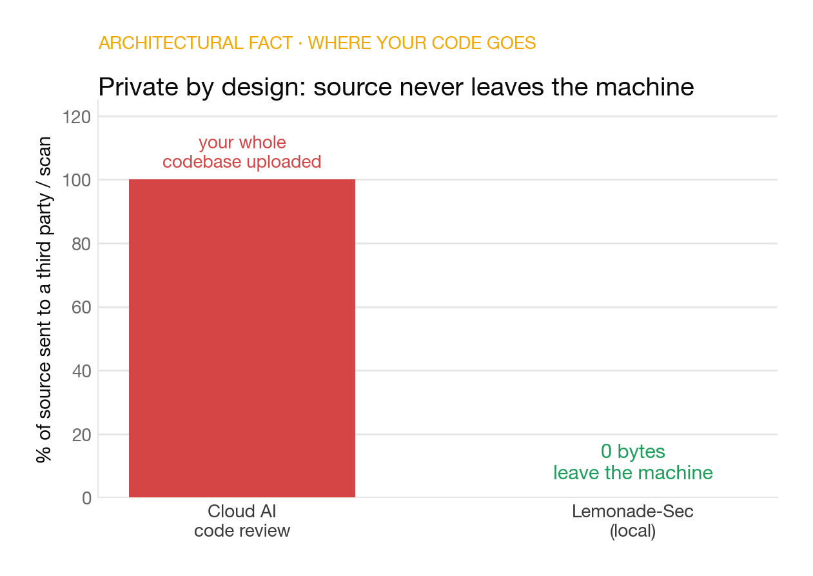
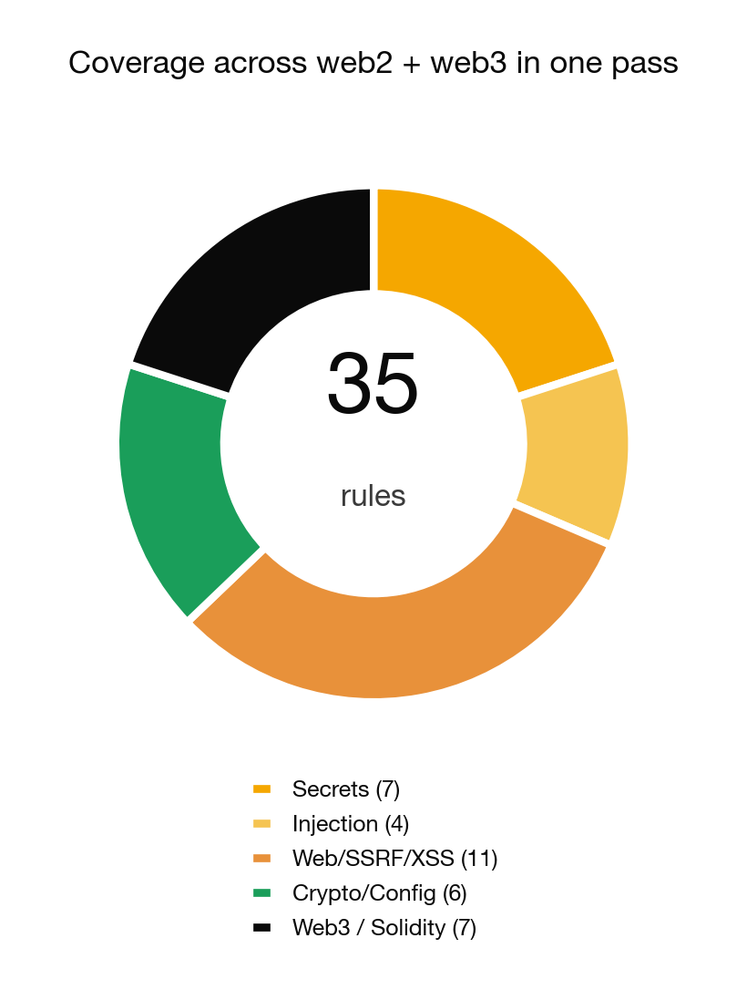
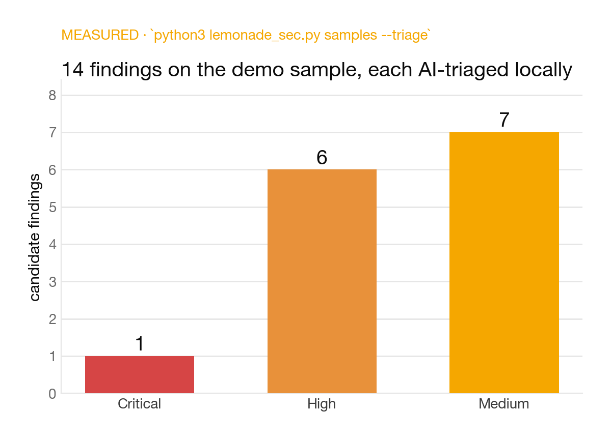
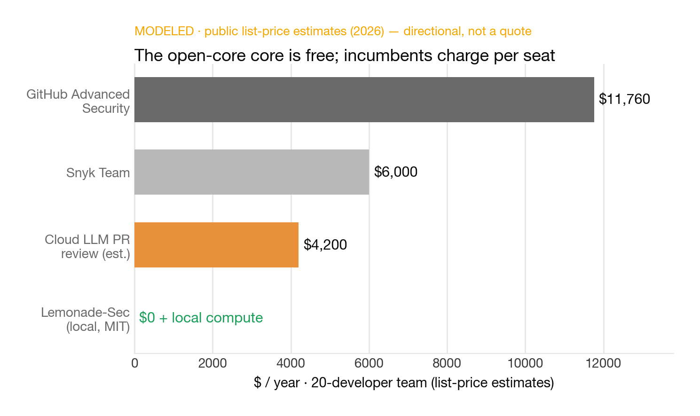

Cloud AI code review means uploading your proprietary source to someone else's servers. For regulated, air-gapped, or simply confidential codebases, that's a non-starter.
Lemonade-Sec runs the entire pipeline — static analysis and AI reasoning — locally, on your own machine, powered by AMD Lemonade.

delegatecall…)./models;
works with any local server.

--scope) · findings are candidatesFigures are modeled from public market estimates — directional sizing, not audited.
| Tier | Price (modeled) | What's in it |
|---|---|---|
| Core MIT | $0 | CLI, 35 rules, local Lemonade triage, offline fallback |
| Team | $15 /dev/mo | SARIF + CI gates, policy-as-code, baseline/diff, dashboards |
| Enterprise | $40 /dev/mo | SSO/RBAC, audit, air-gap deploy, managed local-model ops, support/SLA |

Incumbents charge per seat and require the cloud. Our core is free and local; we monetize CI/governance/support — not the scan.
Comparables in AI-native AppSec: Semgrep, Snyk, Socket — venture-backed on OSS-led adoption.
Design partners in regulated eng orgs · a Lemonade marketplace slot · and the AMD hardware/relationship to make local-AI AppSec the default.